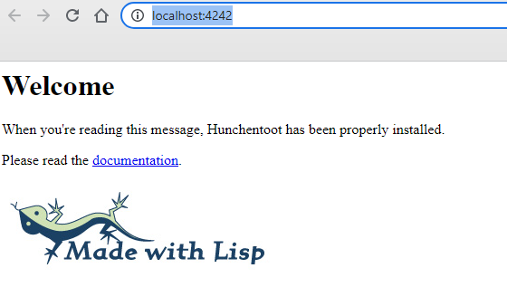
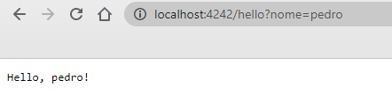
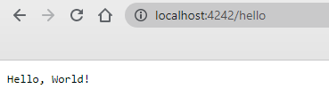
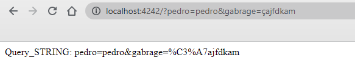
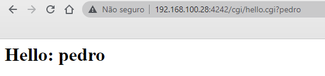
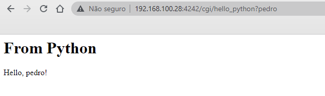
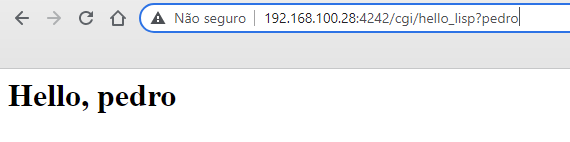

Clean in LISP from Web System
Índice
- 1. Sistema Web.
- 1.1. Clean
- 1.2. Instalação
- 1.3. Configuração.
- 1.4. Simples programa em Clean para Web.
- 1.5. Mas falaremos um pouco de LISP.
- 1.6. Lisp GGI.
- 1.7. Lisp control Clean por Object System Interface
- 1.8. Lisp and Clean Foreign Function Interface
- 1.9. Lisp Hunchentoot Básico
- 1.10. GET Simples - Hello World;
- 1.11. Lisp Hunchentoot Avancado
- 1.12. Extra: HTML e JavaScript
- 2. Home
1 Sistema Web.
1.1 Clean
Clean e Lisp são linguagens funcionais.
1.2 Instalação
A instalação é bastante simples, por isso já utiliza-se de uma versão já pré-compilada. Sendo assim não será preciso configurarmos muita coisa. Além disso, como queremos criar um paginas Web para servidores linux, iremos baixar a versão clean-bundle-complete-linux-x64-latest.tgz. Você conseguirá acessar a seguinte página do Clean.
1.3 Configuração.
Depois de baixar o arquivo, pelo terminal fazemos as seguintes configuração.
# mv Download/clean-bundle-complete-linux-x64-latest.tgz ~/ # tar xvf clean-bundle-complete-linux-x64-latest.tgz . # mv clean-bundle-complete clean/
Com o directório clean criado, vamos então configurar no arquivo ~/.bashrc as seguintes variáveis.
# echo "export CLEAN_HOME=~/clean >> ~/.bashrc # echo "export PATH=$PATH:$CLEAN_HOME/bin >> ~/.bashrc
1.4 Simples programa em Clean para Web.
Neste caso, o programa que iremos abordar são para web servering, com por exemplo o apache, nginx etc. Servidores que gerenciam todas as conexão e requisições necessárias para uma comunicação web. Tais programas chamamos de Common Gateway Interface (CGI). Recomendo o excelente livro: CGI Programming with perl, onde ele aborda tais métodos. Então, vamos ao programa.
module printenv;
import StdEnv, ArgEnv;
Start w
# (cgi, w) = stdio w;
# ctype= "Content-Type:text/html;charset=utf-8";
# cgi= fwrites ctype cgi;
# cgi= fwrites({toChar 13, toChar 10}+++"\n") cgi;
# cgi= fwrites "<html>\n" cgi;
# cgi= fwrites "<body>\n" cgi;
# cgi= fwrites "<h1>Hello: " cgi;
# xx= ans (getEnvironmentVariable "QUERY_STRING");
# cgi= fwrites (xx+++"</h1>\n</body>\n</html>\n") cgi;
= cgi;
where {
ans EnvironmentVariableUndefined="none";
ans (EnvironmentVariable v)= v; }
No Clean precisamos antes de rodar nosso programa compilar nosso código, iremos usar uma parte importante dos arquivos já baixados, que é o ArgEnv, o mesmo deve está no diretório lib/ dentro do directório do clean baixado. Então, tente ver se , caso cometa um erro, pode ser que esteja faltando está library. Vejamos, como compilamos este código.
clm -b -nt -nr hello-web -O hello.cgi ./hello.cgi
Tal programa retorna quando rodado no localmente.
Content-Type:text/html;charset=utf-8Hello: none
Discutiremos um pouco sobre o programa. O código é bastante simples, basicamente ele concatenar string no formato response html, com um variável do servidor que é a \(QUERY\_STRING\), tal variável armazena uma parte do URL. Nesta parte normalmente poderá ser passado alguma key e valor, por exemplo, vejamos a URL:
Recomendo que leia o Enviroment Variables e HTTP.
1.5 Mas falaremos um pouco de LISP.
Estou abordando o lisp neste documento porque o objetivo maior é interligar a linguagem LISP com a linguagem CLEAN. Onde deixamos que o Lisp gerencie o Servidor e usamos programas já escrito nele CLEAN, nem a necessidade de reescrevermos o mesmo.
Obs.: Está ideia é apenas para um treinamento e educacional, não haverá um comparação de desempenho ou uma tentativa de explicação do porque fazemos isto e não optamos por simples programa no flask + gunicorn do python, ou outra linguagem popular do momento em que estiver lendo este documento.
1.6 Lisp GGI.
Podemos também fazer um aplicativo GUI com o lisp, não é nosso objetivo, mas podemos observar.
#!/usr/local/bin/sbcl --script
(format t "Content-type: text/html~%~%")
(format t
" <html>
<body>
<h1>Hello, ~a</h1>
</body>
</html>"
(sb-ext:posix-getenv "QUERY_STRING")
)
Neste caso, vale observar que diferente do clean esta versão do código é implantado em tempo de execução, ou seja, está no formato script.
1.7 Lisp control Clean por Object System Interface
Primeira, uma alternativa para controle do clean programa é usamos o controle de sistema a partir do SO(Sistema Operacional), dessa maneira codificado.
(sb-ext:run-program "./hello.cgi" nil :output *standard-output*)
Temos o resultado:
Hello,World! #<SB-IMPL::PROCESS :EXITED 0>
Usamos a função run-program possui um variação dependendo do common lisp que esteja executado, no sbcl o package sb-ext, já por exemplo ecl, o run-program está no package ext apenas, neste caso a estrutura é a mesma, em todo caso sempre dê uma olhada no manual do seu interpretador, mas não se preocupe muito, existem esta diferença mas normalmente elas são voltada mais para pacotes extras de cada interpretador, mas o restante todos os interpretador que seguem a padrão ANSI, contando que estamos falando se Common Lisp, não de Lisp. Que são o lisp do sbcl e ecl. Vejamos o OSI do ecl.
(ext:run-program "./hello" nil :output :stream)
Hello,World! #<output stream "FD-STREAM" 0x7fffc8ba2e60> 0 #S(EXT:EXTERNAL-PROCESS :PID NIL :INPUT #<output stream "FD-STREAM" 0x7fffc8ba2e60> :OUTPUT NIL :ERROR-STREAM #<input stream "FD-STREAM" 0x7fffc8ba2dc0> :%STATUS :EXITED :%CODE 0 :%LOCK #<lock (nonrecursive) 0x7fffc8927300> :%PIPE #<process 0x7fffc88fcf80>)
Vemos que o retorno no ecl, são três valores, podemos que podemos processá-los como quisermos, exemplo:
(multiple-value-bind (x y z) (ext:run-program "./hello" nil :output t) z))
Neste caso apenas llegamos o z, que o processo.
#S(EXT:EXTERNAL-PROCESS :PID NIL :INPUT #<output stream "FD-STREAM" 0x7fffea8ac8c0> :OUTPUT NIL :ERROR-STREAM #<input stream "FD-STREAM" 0x7fffea8ac820> :%STATUS :EXITED :%CODE 0 :%LOCK #<lock (nonrecursive) 0x7fffea3bdbd0> :%PIPE #<process 0x7fffea464880>)
De qualquer forma o common lisp permite que controle qual será a função que iremos chamar verificado a versão do interpretador, por exemplo:
(defun my-run (program argv)
(declare (type string program))
(declare (type list argv))
(let ((process
(or #+sbcl (sb-ext:process-output
(sb-ext:run-program program argv :output :stream))
#+ecl (ext:run-program program argv :output :stream)) ))
(loop for line = (read-line process nil nil)
while line do (format t "~a" line)) ))
(my-run "./hello" nil)
Hello,World! NIL
Então, com este processo podemos por exemplo controlar produtor de áudio, por exemplo, vejamos.
(sb-ext:run-program "play" '("/home/pedro/sound/sound.mp3")
:output nil :wait nil)
Obs.: é necessário ter o sox instalado, instalar: sudo apt install sox
(sb-ext:run-program "cmd.exe" '("/C" "start" "D:/Sound/sound.mp3")
:search t :windows :hide)
(sb-ext:run-program "cmd.exe" '("/C" "start" "D:/Sound/sound.mp3")
:search t )
Vemos que podemos controlar vários processos entre outro com o lisp, então uma possibilidade é controlar o programa compilado em clean, afinal o programa estará em formato elf, vamos então testá-lo, usamos o programa my-run, escrito anteriormente.
(my-run "./hello.cgi" nil)
Vemos que conseguimos reproduzir no lisp a resposta do clean, vejamos o resultado abaixo.
<html><body><h1>Hello: none</h1></body></html> NIL
1.8 Lisp and Clean Foreign Function Interface
Vamos começar usando a função do clean no lisp. Então quando olhamos no manual do clean, vejamos como exportar seu código do clean para ser usado em outra linguagem, que pode ser n-linguagem, inclusive o python, mas iremos utilizar a código clean no Lisp.
1.8.1 Clean Foreign
1.9 Lisp Hunchentoot Básico
O sistema hunchentoot é um interface de rede com ferramentas para construção de sites dinâmicos. Ele funciona com um servidor web independente, ele é capaz de conexão HTTP/1.1 chunking, conexão persistentes e SSL. Além disso, ele fornece diversos recursos de manipulação automática de seção, registro etc. Ou seja, ele tem além dessa função muitas outras, mas caso queira saber de todas visite o site do hunchentoot.
Então começamos o que interessa, construir uma aplicação web-server em lisp. Começamos com algo simples, um hello world
(ql:quickload :hunchentoot)
(ql:quickload :hunchentoot)
To load "hunchentoot":
Load 1 ASDF system:
hunchentoot
; Loading "hunchentoot"
(:HUNCHENTOOT)
Como iremos precisar do hunchentoot, podemos usar o quick lisp para carregá-lo, caso seja a primeira vez fazendo este comando, o sistema irá apresentar mais informações com um semelhante a isto:
; Loading "hunchentoot" [package chunga].................................. [package cl-base64]............................... [package cl-fad].................................. [package path].................................... [package cl+ssl/config]........................... [package usocket]................................. [package cl+ssl].................................. [package md5]..................................... [package rfc2388]................................. [package trivial-backtrace]....................... [package url-rewrite]............................. [package hunchentoot].......................... (:HUNCHENTOOT)
Como hunchentoot em vale ressaltar, que qualquer informação dentro desse pacote terão o sufixo hunchentoot:, caso queira evitar isto basta usar in-package, mais informaçãoes link.
Então começamos iniciando um servidor http simples, com uma função dinâmica que pegar a query\string é diz um Hello, caso não term a query\string, diz hello, world.
(hunchentoot:start (make-instance 'hunchentoot:easy-acceptor :port 4242))
#<HUNCHENTOOT:EASY-ACCEPTOR (host *, port 4242)>
Como este comando iniciar o servidor na porta 4242 no localhost(que é ip do local do nosso computador), se você iniciou, acesse por http://localhost:4242, esta porta podemos escolher, mas devemos ficar atento com as portas já utilizados pelo SO e outra aplicações Web. O número da porta possui um intervalos de (0 à \(2^{10}\)). Você pode vê as opções aqui.
Quando acessar o link pelo browser veremos isto no browser:

Figura 1: Print Check Browser.
E isso no terminal:
127.0.0.1 - [2022-03-31 02:04:52] "GET / HTTP/1.1" 200 393 "-" "Mozilla/5.0 (Windows NT 10.0; Win64; x64) AppleWebKit/537.36 (KHTML, like Gecko) Chrome/99.0.4844.84 Safari/537.36"
1.10 GET Simples - Hello World;
Então programos o hello world pelo método GET, então escrevemos:
(ql:quickload :hunchentoot) (defparameter *web* (make-instance 'hunchentoot:easy-acceptor :port 4242)) (hunchentoot:define-easy-handler (hello :uri "/hello") (nome) (setf (hunchentoot:content-type*) "text/plain") (format nil "Hello, ~a!" (if (null nome) "World" nome))) (hunchentoot:start *web*)
Podemos visualizar no browser o resultado no link: http://localhost:4242/hello?nome=pedro, com meu nome.

Sem nome in https://localhost:4242/hello

Para desativar o servidor basta digitar:
(hunchentoot:stop *web*)
1.11 Lisp Hunchentoot Avancado
Vamos fazer alguma aplicação mais complexa, que são o seguintes pontos:
- GET/POST REQUEST
- HTTP HEADERS
- Input/Output JSON
- Input/Output RAW BYTES INFOMATION
- Authentification
- CGI script
1.11.1 GET/POST/PUT Request
- GET Request
O método get e post é essencial para a comunicação HTTP, como vimos no GET Simples - Hello World, usamos o método GET, quando manipulamos a QUERYSTRING, mas vejamos novamente outra aplicação utilizando o método Query.
;; file: client_fib.lisp (ql:quickload :hunchentoot) (defparameter *web* (make-instance 'hunchentoot:easy-acceptor :port 4242)) (defun fib(n &optional (prev 1) (acc 0)) (cond ((> n 50) "limite break, because we limit cost") ((<= n 0) acc) (t (fib (- n 1) acc (+ prev acc)) ))) (defun client-name(name) (if (null name) "Hello, Cliente" (format nil "Hello, ~a!" name))) (hunchentoot:define-easy-handler (hello :uri "/fib") (number name) (setf (hunchentoot:content-type*) "text/html") (let ((v (fib (parse-integer number))) (c (client-name name))) (format nil "<html><body><h1>~a<\h1><p>Fib: ~a</p></body></html>" c v)) ) (hunchentoot:start *web*) ;; user: sbcl --load client_fib.lispAgora podemos acessar a página pela url => http://localhost:4242/fib?number=40&name=pedro. A QUERY\STRING dessa url é "?number=40&name=pedro", os paramentos da função define-easy-handler do hunchentoot são number e name, tais valores são atributos pelo conteúdo da query number e name respectivamente. Sendo assim, pegamos tais valores é enviamos a funções fib e *client-name, que nós retorna o valores de resposta. Obs.: para função fib, primeiramente convertemos o valores em inteiro.
Neste caso a propria função define-easy-handler separa o conteúdo da query string pelas key como os mesmo nome dos symbols de entrada, conforme vemos o number (symbol) e na url number= (key=), mas caso queria pegar o conteúdo da querystring por completo podemos fazer o seguinte.
(ql:quickload :hunchentoot) (hunchentoot:define-easy-handler (get-query :uri "/") () (let* ((req hunchentoot:*request*) (qs (hunchentoot:query-string* req))) (format nil "Query_STRING: ~a" qs)))
Por exemplo, testamos o seguinte url => http://localhost:4242/?pedro=pedro&gabrage=%C3%A7ajfdkam, vejamos o resultado.

Dessa forma, como a Query\String é um string podemos manipulamos com queremos. Mas vejamos um pouco de teória, o que acontece aqui é que o hunchentoot gerencia todos os request recebedo nos entypoint, de modo que toda vez que ele recebe um request é amazena em uma variável global chamada request todos os paramento passado para o programa em lisp pelo o usuário solicitador (ou seja, o cliente), sendo assim podemos verificar varias coisas neste requeste, uma delas é a QUERYSTRING. Outra maneira de mamipulamos a Query\STRING por variável ambiente. Como é um web-server ele também amazena os valores da QUERYSTRING na variável com o mesmo nome. Importate é tomamos cuidado com está variável para outro valores vazarem para outra solicitações, mas de qualquer forma abortaremos está questão no subtema CGI, conteúdo petencente a este mesmo manual.
- POST Request
O método POST request é muito importante na comunição TCP/IP do HTTP/HTTPS, sendo assim iremos demostra algumas programas utilizamos o post como método, mas tarde nos aprofuntaremos, na passagem de json e outro tipos de dados pelo método post. Vejemos então um aplicação básica.
(hunchentoot:define-easy-handler (hello-post :uri "/hellopost" :default-request-type :post) (name) (setf (hunchentoot:content-type*) "text/html") (format nil "Hello, ~a!" name))
Neste entypoint apenas aceita post, de modo que se queremos acessar valores que são possado via post, então para testa podemos utiliza-se o html;
Também queria pode utiliza-se de ferramentas do tipo Postman. Também podemos pegar o conteúdo do post completo sem o sistema força o parser nas key.
(hunchentoot:define-easy-handler (get-post :uri "/postall" :default-request-type :post) () (setf (hunchentoot:content-type*) "text/pain") (let ((ps (hunchentoot:post-parameters* hunchentoot:*request*))) (format nil "POST: ~a" ps)) )Novamente podemos testar com o html abaixo:
1.11.2 HTTP HEADERS
Quando trabalhamos com protocolo de redes, e principalmente na comunica TCP/IP, devemos nos atentar no cabeçalho, ou header, então vamos abordar um pouco de como definimos este paramento no hunchentoot. O importante é sempre seguimos os protocolo da do W3C, que estabelece-se diretrizes de como deverão ser a comunicação da rede WC3 HTTP header.
De qualquer maneira vejamos como podemos definir nosso headers. Vejamos o exemplo para uma comunicação que deverá receber um json.
(hunchentoot:define-easy-handler (infos-json :uri "/system/menu") ()
(setf (hunchentoot:content-type*) "application/json; charset=utf-8")
(setf (hunchentoot:header-out "Access-Control-Allow-Origin") "*")
(setf (hunchentoot:header-out "Content-Type") "application/json")
(setf (hunchentoot:header-out "Access-Control-Allow-Headers")
"Content-Type, authorization")
(multiple-value-bind (username password) (hunchentoot:authorization)
(format nil "~a ~a" username password) ))
Neste entypoint definimos que o conteúdo que iremos retorna será um "application/json", definido o Content-type, até aqui não definimos o header. Mas quando declaremos (setf (hunchentoot:header-out "Access-Control-Allow-Origin") \"\\")*, desmos que o campo "Access-Control-Allow-Origin", com \*, dissemos que o conteúdo da solicitação será sem credenciais. Na linha logo abaixo, definimos o tipo de dado que deverá esta na entrada, deverá application/json, por fim devemos por último que o controle de acesso ao headers deverá passar por autenticação.
No exemplo usamos este tipos de cabeçalho, mas você pode configurar o que quiser, basta manter o padrão apresentado, (setf (hunchentoot:header-out "KEY") "NEW-VALUE").
1.11.3 IO Json
Uma maneira bastante útil de compartilhar dados na rede é usamos o formato json, principalmente entre servidores ou API's, existem também a possibilidade do XML, mas o json é uma maneira bem mais simples de trabalhar, então vejamos com trabalharemos com json no hunchentoot. Nesta aplicação iremos receber um json é retorna um json, no caso será o mesmo json de entrada, como exemplo, mas o json de saída poderá ser qualquer outro, só para fins de demonstração iremos utilizar o mesmo json, mas deverá funcionar com qualquer outro que a aplicação retorna. Então vejamos:
(ql:quickload :cl-json)
(hunchentoot:define-easy-handler (json-io :uri "/json") ()
(setf (hunchentoot:content-type*) "application/json; charset=utf-8")
(setf (hunchentoot:header-out "Context-Type") "application/json; charset=utf-8")
(let* ((raw-data (hunchentoot:raw-post-data :force-text t))
(js (with-input-from-string (s raw-data) (json:decode-json s))) )
(format nil "~a" (json:encode-json-to-string js))))
O importante aqui é que configuramos um ponto de entrada que entrar json, mas quando iremos ler no hunchentoot forçamos para ler como text, existem a possibilidade de ferem binary também, ao obter todos os corpo do request, usamos outra library, cl-json, uma library que manipula json, sendo assim com a mesma decoficamos a string para json, outra coisa antes de retorna o resultado codificar nosso objeto json para string.
Para testar este entypoint, precisamos fazer um request passando um json, novamente podemos utiliza aplicativos com post-man, mas aproveitamos sbcl, fazemos então com o sbcl.
(ql:quickload :drakma)
(defun post-request(url &optional string-json)
(multiple-value-bind (stream status-code)
(drakma:http-request url :content string-json
:content-type "application/json; charset=utf-8" :want-stream t)
(let ((r nil))
(when stream
(loop for line = (read-line stream nil)
while line do (push line r))
(close stream))
(values status-code (format nil "~{~a~^~% ~}" r))) ))
;; run: (post-request "http://192.168.100.28:4242/json" "{\"name\": \"pedro\"}")
Esta função recebe url e um paramento opcional que deverá ser um string com formato json, que responderá um inteiro, corresponde ao código de status da comunição http e o body da responda em formato string. Como será um json, será um string no formato json.
1.11.4 IO Binary Stream
Como estaremos trabalhando com dados binário, devemos trabalhar o que estávamos recebendo, mas vamos supor que nossa aplicação está atrás de proxy ou que o request para por um autenticação antes mesmo de receber o streams (transmissão).
#+begin_src lisp
(ql:quickload :cl-json)
(hunchentoot:define-easy-handler (json-io :uri "/json") ()
(setf (hunchentoot:content-type*) "application/json; charset=utf-8")
(setf (hunchentoot:header-out "Context-Type") "application/json; charset=utf-8")
(hunchentoot:raw-post-data :force-binary t))
#+endsrc
1.11.5 Authorization
Criamos um sistema de autenticação, abortando o básico o método Basic Auth, também falamos um pouco de como acessar o cabeçalho (ou header) de 'AUTHORIZATION', como isso fazemos a autenticação que queremos.
- O Basic Auth é uma autenticação simples que passa um string no formato base64 com usuário e senha separado por ; (ponto e vírgula). Como é uma autenticação mais simples pode utiliza-se de uma função já existente no hunchentoot, que já nos passa o o usuário e senha, então vejamos:
(hunchentoot:define-easy-handler (authz :uri "/auth") ()
(setf (hunchentoot:content-type*) "text/plain")
(setf (hunchentoot:header-out "Access-Control-Allow-Origin") "*")
(setf (hunchentoot:header-out "Content-Type") "text/html;application/json")
(setf (hunchentoot:header-out "Access-Control-Allow-Headers")
"Content-Type, authorization")
(setf (hunchentoot:return-code*) hunchentoot:+http-bad-request+)
(multiple-value-bind (username password) (hunchentoot:authorization)
(format nil "User: ~A ; Password: ~A" username password)))
Caso seja necessário usamos outro tipos de autenticação, podemos obter acesso no conteúdo do cabeçario 'AUTHORIZATION', vejamos então o cabeçario:
(hunchentoot:define-easy-handler (authz :uri "/auth") () (setf (hunchentoot:content-type*) "text/plain") (setf (hunchentoot:header-out "Access-Control-Allow-Origin") "*") (setf (hunchentoot:header-out "Content-Type") "text/html;application/json") (setf (hunchentoot:header-out "Access-Control-Allow-Headers") "Content-Type, authorization") (format nil "~a" (hunchentoot:header-in* "Authorization"))
1.11.6 CGI Script
Antes de começamos devemos esclarer a sigla CGI, está sigla ao contrario do CGI usados em filmes da marvel ou em qualquer cinema, que possui um nome Computer Generated Imagery, o nosso CGI significa na verdade (Common Gateway Interface), que é uma interface que permite que o servidor execute código externo a ele, ou seja, execução de código que não faze parte do código padrão do servidor. Então vejamos como habilitamos este recurso no hunchentoot, implemetamos o seguinte trecho.
(ql:quickload :hunchentoot-cgi) (ql:quickload :chunga) (setf chunga:*accept-bogus-eols* t) (pushnew (hunchentoot-cgi:create-cgi-dispatcher-and-handler "/cgi/" ;; url-enderenco "/mnt/d/Works/cgi/" ;; base locatization cgi program ) hunchentoot:*dispatch-table* :test #'equal)
Então testamos aquele programa em clean escrevemos antes, o hello.icl, aonde complitamos o mesmo para hello.cgi, vejamos abaixo o resultado:

Podemos rodar programas semelhante em qualquer linguagem, por exemplo, em python:
#!/usr/bin/python3.8
import os
def hello_cgi(text):
name = text if text is not None else "World"
return "<p>Hello, {}!</p>".format(name)
print("Content-type: text/html\n\n")
print("<html><body><h1>From Python</h1>")
print(hello_cgi(os.environ['QUERY_STRING']))
print("</body></html>")

Também podemos fazer isto com o lisp:
#!/usr/local/bin/sbcl --script
(format t "Content-type: text/html~%~%")
(format t
" <html>
<body>
<h1>Hello, ~a</h1>
</body>
</html>"
(let ((qs (sb-ext:posix-getenv "QUERY_STRING")))
(if (zerop (length qs)) "World" qs))
)

Citei duas linguagem, mas qualquer liguagem podem ser usadas com CGI script.
1.12 Extra: HTML e JavaScript
Nesta documentação todos os processo foram efeito utiliza-se de programa para montar back-end interface, mas caso queira montar programas para o front-end, é possivel trabalhamos com algumas library também, por exemplo CL-WHO, que é um gerador de html. Vejamos um exemplo:
(ql:quickload :cl-who) (cl-who:with-html-output (*standard-output* nil :prologue t) (:html (:body "Hello, World")) (values))
<!DOCTYPE html PUBLIC "-//W3C//DTD XHTML 1.0 Strict//EN" "http://www.w3.org/TR/xhtml1/DTD/xhtml1-strict.dtd"> <html><body>Exemplo</body></html>
Existem muitas possibilidades, caso queira visualizar melhor de uma olhada na página: https://edicl.github.io/cl-who/. Também é possivel geramos código javascript de um código lisp usando o parenscipt, vejamos um exemplo:
(parenscript:ps (defun greeting-callback() (alert "Hello, World")))
"function greetingCallback() {
__PS_MV_REG = [];
return alert('Hello, World');
};"
Para mais detalhes visualize a página: https://parenscript.common-lisp.dev/reference.html.
2 Home
Minha Página (My Page): https://hitokey.github.io/